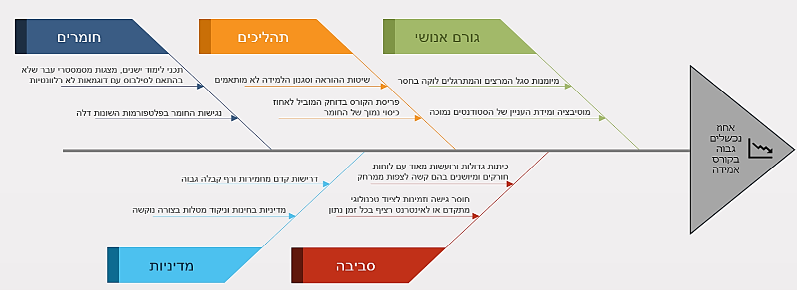

ניתוח ועיצוב מערכות מידע הוא התחום שמתרגם צורך עסקי ל-מערכת שמספקת ערך. האנליסט/ית עומד/ת באמצע: מבין/ה את התהליך והבעיה בשטח, ומתרגם/ת אותם להגדרה ברורה שצוות פיתוח (היום — גם AI) יכול לבנות לפיה.
לאורך הקורס נעשה זאת עם AI כשותף — אבל ערך האנליסט/ית הוא בשיקול הדעת: מה לבנות ובשביל מי, לא בציור התרשימים.
היא לעזור בקבלת החלטות.
מערכת מידע קיימת כדי לטפס בפירמידה — להפוך נתונים גולמיים להחלטות.
כל חומרי הקורס במקום אחד: השקפים, הדוגמאות, חומרי העזר ופרויקט הקורס — פתוחים לעיון ולהורדה, ומתעדכנים לאורך הסמסטר.
הדוגמאות במאגר מגיעות בשתי גרסאות — וזה ההבדל שנעבוד איתו לאורך כל הקורס:
הנתונים כפי שנאספים בשטח — לא מסודרים, חלקיים, ולפעמים סותרים. נעבוד איתם יחד בכיתה כדי ללמוד איך מפיקים מהם תמונה אמינה.
הגרסה הסופית והמסודרת של כל שלב. עליה נבנה את השלבים הבאים, והיא דוגמת ייחוס כשתעבדו על הפרויקט שלכם.
כלי ה-AI שבו נעבוד. מספיק חשבון אחד לכל צוות — אפשר לשתף אותו בין חברי הקבוצה.
דרך Claude תתחברו ל-MCP של הקורס — ושם תפגשו את הלקוחות שלכם (כמו שמעון, מנהל הקפיטריה) ותראיינו אותם לאיסוף דרישות. הוראות התחברות — בשקף הבא.
מהגלם למוצר — לאורך הקורס נראה איך עוברים מחומר מבולגן לתוצר מסודר, צעד אחר צעד.
מ-claude.ai/download — זה הדבר היחיד שצריך מראש. מספיק חשבון חינמי (ולצוות — החשבון המשותף).
הורידו ממאגר הקורס את sad-mcp.mcpb,
פתחו ב-Claude Desktop את Settings → Extensions
וגררו את הקובץ לתוך העמוד.
בשימוש הראשון תיפתח הזדהות Google — היכנסו עם חשבון @post.bgu.ac.il. מכאן הכול אוטומטי.
📍 איפה הקובץ? בעמוד הראשי של מאגר הקורס —
github.com/dcodish/SAD-course-materials
שם גם ההוראות המלאות + התקנה ידנית למתקדמים.
נתקעתם? אל תילחמו לבד — שאלו את Claude עצמו, את הפורום, או אותנו בשעות הקבלה.
ה-SDLC הוא עמוד השדרה של הקורס — נתחיל בייזום ונלך שלב-שלב עד הטמעה ותפעול.
בשלב זה: ייזום — מזהים בעיה עסקית ומגדירים מטרה
בעיה עולה מהשטח — עובדים או לקוחות שחווים כאב ומתלוננים.
⚠️ צריך לגייס ספונסרההנהלה מזהה יעד או צורך אסטרטגי ומניעה את הפרויקט.
✅ הספונסר מובנהיזם מזהה הזדמנות בשוק ובונה משהו חדש מאפס.
⚠️ צריך לגייס (משקיעים)הארגון מזמין גוף חיצוני לאבחן ולפתור — האנליסט/ית מגיע/ה מבחוץ.
✅ הלקוח הוא הספונסרחוק, תקן או רגולטור מחייבים שינוי — אין ברירה.
✅ הספונסר מובנהתקלה, פריצה או כשל גדול מחייבים פרויקט דחוף.
✅ הדחיפות מייצרת גיבויהספונסר הוא מי שנותן לפרויקט גיבוי, סמכות ותקציב. בלי ספונסר — אפילו בעיה אמיתית נתקעת. כשאין ספונסר מובנה (מלמטה-למעלה, סטארט-אפ), התפקיד הראשון של האנליסט/ית הוא לגייס אותו — להראות את הכאב ואת מחירו למי שיכול להניע.
"בצהריים, בשעת ההפסקה, אנחנו קורסים. נוצר תור ארוך — ואנשים מוותרים ועוזבים בלי לקנות. מנות מבוקשות אוזלות, ואין לי תמונה אחת של מה שקורה: אני רץ למחשב כל הזמן. אני מפסיד מכירות דווקא כשהכי עמוס, ולקוחות מתוסכלים לא חוזרים. נפתח גם דוכן חדש ליד ההנדסה שלוקח לי קבועים. אני צריך שזה ייפתר עד הסמסטר הבא."
זה מה ששמעון מספר — הבעיה כפי שהוא חווה אותה (מכירות אבודות, לקוחות מתוסכלים), לא בקשה ל"אפליקציה". בשלב הבא נצא בעצמנו לשטח — נצפה בתור, נדבר עם אנשים ונאסוף נתונים — כדי לאמת ולהעמיק את מה ששמעון תיאר.
הסיפור הזה הוא עמוד השדרה של הקורס — נחזור אליו בכל שלב במחזור חיי הפיתוח (SDLC).
| # | השלב | מה עושים בו | |
|---|---|---|---|
| 1 | הגדרת הבעיה | סימפטומים, ראיונות, מי מושפע — מנסחים מהי הבעיה | בהרצאה זו |
| 2 | ניתוח שורש (RCA (Root Cause Analysis · ניתוח שורש)) | יורדים מהסימפטום אל הסיבה האמיתית שמחוללת אותו | בהרצאה זו |
| 3 | פיתוח חלופות | מייצרים כמה דרכים אפשריות לסגור את הפער | בהמשך הקורס |
| 4 | בחירת חלופה | שוקלים ישימות, עלות וסיכונים — ובוחרים | בהמשך הקורס |
| 5 | הטמעה | בונים, משיקים ומטמיעים את הפתרון הנבחר | בהמשך הקורס |
| 6 | הערכה | מודדים אם הבעיה אכן נפתרה — ומשפרים | בהמשך הקורס |
בהרצאה זו נעבור לעומק על שלבים 1–2 ונמלא אותם על דוגמת הקמפוס; שלבים 3–6 ייפרשו על פני הקורס. וזכרו — פתרון יכול להיות ניהולי, טכנולוגי או אחר, לא בהכרח מערכת מידע.
שמעון מרגיש שהבעיה היא חוסר כוח אדם. אבל נתוני הקופה שכבר קיימים מראים עובדות: מתי באמת השיא, כמה מנות באמת אוזלות, וכמה מכירות אובדות. בודקים מה הנתונים אומרים — לפני שמקבלים תחושות כעובדות.
תור ארוך הוא סימפטום — מה שכואב. הבעיה האמיתית עמוקה יותר: מה השורש? מי שמטפל בסימפטום בלבד — פותר את התור הזה, והוא חוזר מחר.
קודם הבעיה (1–4), ורק אחר כך הפתרון (5–7). לא קופצים לפתרון לפני שהבעיה ברורה.
לפני שמציעים פתרון, ממסגרים את הבעיה בשלושה חלקים: (1) מצב אידיאלי — איך נראה "טוב"; (2) הבעיה הקיימת — מה קורה היום ומה המשמעות/ההשפעה שלה; (3) הפער ביניהם — זה מה שהמערכת באה לסגור.
הפער: היום ההפסקה מתבזבזת בתור בלי ודאות למנה, והקפיטריה עובדת על ניחוש — באידיאל כולם אוכלים בזמן וההיצע פוגש את הביקוש. את הפער הזה יסגור פתרון שנבחר בהמשך.
ההנהלה מאשרת תקציב לפי מספרים, לא לפי תחושות. תור ארוך הוא סימפטום — אבל "כך וכך מכירות אבודות בכל צהריים" הוא הנימוק. בעיה שאי-אפשר לתרגם לכסף תתקשה לקבל אישור, גם אם הכאב אמיתי — ולכמת אותה זה בדיוק תפקיד מהנדס/ת התעשייה.
סימפטום = מה שרואים · השלכה כלכלית = מה שזה עולה — בלי מספר, קשה להצדיק את הפרויקט.
תרשים עצם-דג שממפה את הסיבות האפשריות לפי קטגוריות (אנשים, שיטה, טכנולוגיה, סביבה).
שואלים "למה?" שוב ושוב (בערך חמש פעמים) עד שמגיעים מהסימפטום אל הסיבה האמיתית.
Fault Tree Analysis: מתחילים מהתקלה ויורדים בעץ לוגי (AND/OR) של הגורמים שמובילים אליה.
סימפטום ≠ שורש — מתקנים את השורש, לא את התור.
פתחו את הקטגוריות — והן מצביעות שוב ושוב על אותו שורש: היעדר מערכת הזמנה מקוונת.

שימו לב: הקטגוריות אינן קבועות — כאן נבחרו חומרים · תהליכים · גורם אנושי · מדיניות · סביבה, בקפיטריה השתמשנו באחרות. את הקטגוריות בוחרים לפי הבעיה.
היעדר מערכת הזמנה מקוונת. את שעת ההפסקה אי-אפשר לשנות — מה שאפשר לתקן הוא היכולת להזמין מראש ולפזר את הביקוש. וזה, לא התור עצמו, מה שהפתרון מכוון אליו.
הבעיה: תור פיזי שלא מבטיח מנה, שעולה מכירות אבודות בשיא. הפתרון המוצע: הזמנה מראש, תשלום ואיסוף עם זמינות גלויה — שסוגר בדיוק את הפער שמיסגרנו.
בכל יום, בשעת ההפסקה הקצרה שבין ההרצאות (12:00–12:15), מאות סטודנטים מגיעים יחד לקפיטריית הקמפוס. נוצר תור פיזי ארוך שאינו מבטיח מנה: עד שמגיעים לדלפק ההפסקה נגמרת, ולא פעם מתברר שהמנה המבוקשת כבר אזלה. לשמעון, מנהל הקפיטריה, אין תמונת מצב אחת של ההזמנות והמלאי, והוא נאלץ לתפעל את העומס ידנית ובאופן חלקי. כך אובדות מכירות דווקא בשעת השיא, סטודנטים מתוסכלים נוטשים — חלקם לטובת דוכן מתחרה שנפתח לידם — והקיבולת של המטבח מחוץ לשעת השיא נותרת מנוצלת חלקית בלבד.
המערכת המוצעת נועדה לפתור את כל אלה: הזמנה ותשלום מראש מהטלפון, עם זמינות מלאי גלויה ואיסוף מובטח מול קוד — כך שהביקוש מתפזר לאורך זמן, ההפסקה נשמרת לאכילה ולא להמתנה, והקפיטריה מגדילה מכירות ומקבלת נתונים לתכנון התפריט והכמויות.
הפתרון המוצע הוא כיוון ראשוני — ייבחר סופית רק אחרי בחינת חלופות ובדיקת ישימות.
זהו הקלט לשלבים הבאים — חקר המצב הקיים והניתוח שיבואו אחריו נשענים על הניסוח הזה.
לוקח תמלילי ראיונות וצ׳אטים מפוזרים ומחזיר סיכום מסודר — מי אמר מה, מה חוזר על עצמו אצל כמה אנשים.
מתוך החומר הגולמי מציע הצהרת בעיה ראשונה — מה כואב, למי, ומה המחיר — כנקודת פתיחה לדיון.
בונה תרשים Fishbone ראשוני ומציע שורשים אפשריים לבעיה — חומר גלם לדיון, לא תשובה סופית.
מארגן עשרות סימפטומים מפוזרים לכמה קבוצות בעלות מכנה משותף — כדי לראות את התמונה ולא רק רעש.
בדיוק כמו שאמרנו: אף פעם לא מקבלים פלט בעיניים עצומות. על כל תוצר ייזום שואלים מה הוא פספס, מה הוא המציא, ומה הוא הניח? — וההחלטה מי הבעיה האמיתית נשארת שלכם.
מיסגרנו את הבעיה — בשלב הבא יוצאים אל המצב הקיים: איך עובדים היום בפועל.
בשלב זה: חקר מצב קיים — ממפים את התהליך הקיים ואת בעלי העניין
תהליך עסקי הוא רצף מובנה ומסודר של פעולות ומשימות שיש לבצע כדי לתת שירות, לייצר מוצר, או לשרת מטרה עבור לקוח.
משזיהינו את התהליכים — בשבוע הבא נמדל אותם רשמית בעזרת BPMN (Business Process Model and Notation · מידול וסימון תהליכים עסקיים).
החוזק של ה-BA הוא חשיבה תהליכית: לראות מערכת כזרימת עבודה של אנשים, שלבים והחלטות — בדיוק מה שלמדתם. למפות תהליך, לזהות צוואר בקבוק ולשאול "למה ככה?" — זה הלב של ה-BA.
צהריים בקפיטריה. אין אפליקציה, אין מסך, אין הזמנה מראש — נלך עם הסטודנט/ית צעד-אחר-צעד דרך התהליך כפי שהוא באמת מתנהל היום:
זהו בדיוק התהליך הקיים שנמדל באופן פורמלי בשבוע הבא — עם BPMN (הרצאה 2).
את התהליך הידני של ההזמנה בקמפוס תיארנו מראיונות ותצפיות — בהערות גולמיות ולא מסודרות. הבינה הופכת אותן לטיוטה מובנית של התהליך תוך שניות.
טיוטת המפה היא נקודת פתיחה, לא אמת. עוברים עליה מול מה שראיינו וראינו בשטח — מוסיפים את החריגים, מתקנים את ההעברות, ומסמנים היכן באמת נתקעים. המפה המאומתת היא הקלט לתיעוד הפורמלי של התהליך בהרצאה הבאה (BPMN).
הבינה מאיצה את מיפוי המצב הקיים — אבל האנליסט/ית מאמת/ת אותו מול המציאות.
בהרצאה הראשונה הכרנו את הדיסציפלינה ואת המחזור, והתחלנו את הדוגמה הרצה של הקורס — ההזמנה בקמפוס — דרך שני השלבים הראשונים של ה-SDLC:
ניתוח ועיצוב מערכות מידע. האנליסט/ית הוא הגשר בין הצורך העסקי למערכת.
מחזור חיי פיתוח מערכת — שמונה השלבים שילוו אותנו לאורך כל הקורס, שלב-שלב.
מיסגרנו את הבעיה העסקית בקמפוס — לא קפצנו לפתרון.
התחלנו למפות את התהליך הקיים — איך מזמינים בקמפוס היום.
מיפינו את תהליך ההזמנה בקמפוס במילים. בהרצאה הבאה ניקח אותו צעד קדימה ונמדל אותו באופן פורמלי בעזרת BPMN — שפת תרשימים לתהליכים עסקיים — כדי שכל בעלי העניין יראו בדיוק את אותו תהליך.
הכרנו את הדיסציפלינה ואת המחזור והתחלנו את הדוגמה הרצה — מכאן ל-BPMN.